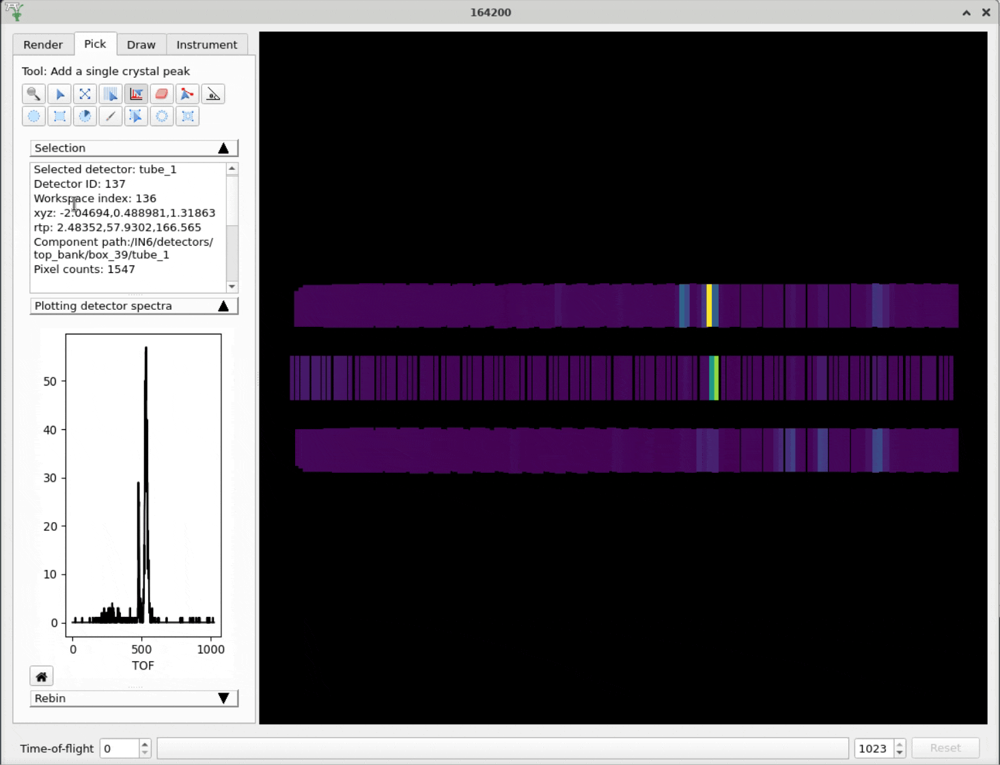

Mantid Workbench Changes#
New Features#
Added extra tooltip for ISIS Linux users to help out anybody on IDAaaS who has not mounted the archive. This is due to a change in early 2024 that will require users to mount the archive on IDAaaS themselves using their federal ID.
Added new options in the plot settings which let users set default X and Y ranges for spectra plots, effectively zooming in on open.
Editing a plot’s title will now automatically update its name in the plot selector (and vice versa).
Monitor for external changes to script files that are open in Mantid to prevent loss of work.
An email is now required to submit an error report.
Project recovery performance has been improved by saving one python file for all workspaces, rather than one python file per workspace.
Bugfixes#
Fixed a bug that caused surface plots to hang and/or crash after changing properties such as axis labels or colour bar limits.
Home button on a 3D plot will now reset the view to the default view.
Fixed a bug where Workbench can hang if you close a plot while an algorithm is processing.
Fixed a bug where the y axis in the superplot window did not scale immediately when selecting the “Normalise by max” option.
Improved the behaviour of the load dialog with event workspaces so that it doesn’t expand off the bottom of the screen.
Fixed a bug where overplotting group workspaces would cause an unhandled exception.
Fixed a bug where dragging a plot’s legend could cause the plot to resize.
Fixed a bug where double clicking a 3D plot to edit an axis label would grab hold of the plot for rotation and not release when the dialog was closed.
Line Colour selection button is re-enabled in the toolbar of contour plots.
Fixed a crash which could happen if workspaces are deleted while the project saves. Save now fails in a controlled way.
Fixed an unhandled exception thrown when attempting to remove a curve from a plot that has a badly formatted label.
Fixed a bug where it was not possible to remove the grid lines on a plot once they had been added.
The splash screen will no longer stay on top of every window.
Fixed a bug that made the Settings window disappear behind the Workbench window on Linux when opening the font selection menu.
Fixed a bug where a 3D plot would shrink every time you changed a property of the colorbar.
Fixed an issue when displaying large array properties in the sample logs viewer.
Fixed a bug where fixed properties in the fitting view could not be un-fixed.
Fixed an error in the plot script generated for 1D MDHisto workspace plots.
Fixed a bug with
plotSpectrumwhere quickly over-plotting could cause Workbench to hang.Mantid’s package size has been reduced by removing the algorithm dialog screenshots from the documentation.
Fixed a crash which could occur when opening a file with unicode characters.
Fixed a bug where changing waterfall x and y offsets would not update the plot axes limits.
Fixed a bug where double clicking a plot to open the settings dialog would not end a pan/zoom event if either tool was selected.
Fixed a crash when opening the Rebin algorithm dialog when a group workspace is selected as the input workspace.
Fixed a bug in the plot settings axes tab where editing an axis title and clicking
Apply to allwould clear your changes. The UI has been slightly reworked to make it clearer whatApply to allinteracts with.Fixed a crash that could occur when an editor tab was closed while executing.
Fixed a crash from setting both waterfall plot offsets to 0.
Fixed a bug that could result in the running of a stale version of a project recovery script.
InstrumentViewer#
New features#
Widgets in the collapsible stack in the Pick tab are now resizable so users can change the height of the plot relative to the height of the info box.
{kind=link}

Bugfixes#
Fixed an intermittent crash caused by a project recovery save happening while the Instrument Viewer was opening.
Fixed a problem where spurious peaks could be added when picking single peaks.
SliceViewer#
Bugfixes#
Fixed an intermittent error when reopening SliceViewer after a change in support for non-orthogonal axes.
Fixed an error when exporting ‘y’ cuts for event workspaces in line plot and ROI modes.
Fixed a bug in the cut viewer where the plot would not update after changing plot settings until the window had been resized.
Fixed a layout bug when toggling the peaks overlays interface on/off.
Fixed a bug where adding peaks was not taking into account the projection matrix when calculating HKL.
Fixed a memory leak in the colour bar.
Fixed a bug where the spin box showed an incorrect value when a peak was selected that was outside the range of the data.
Fixed an error when trying to click on the 2D plot after the
Add Peakoption is selected, but the peaks workspace has already been deleted.